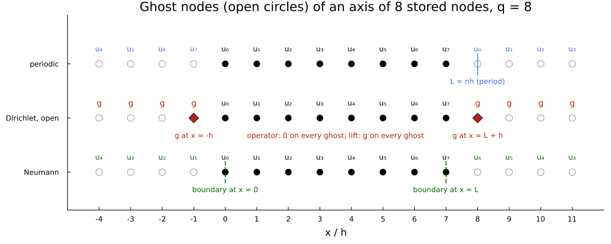
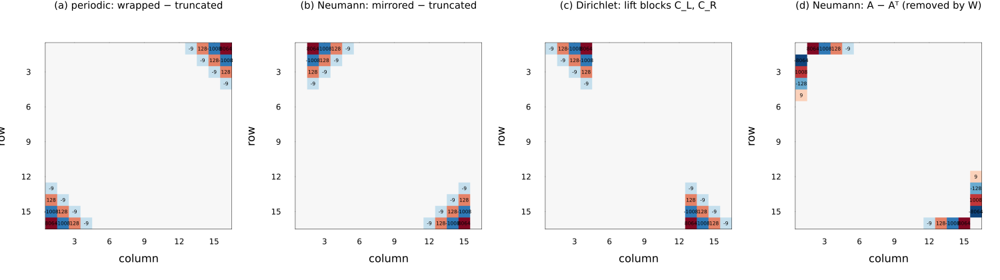
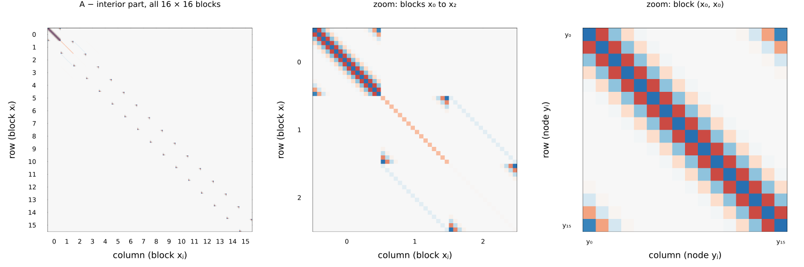
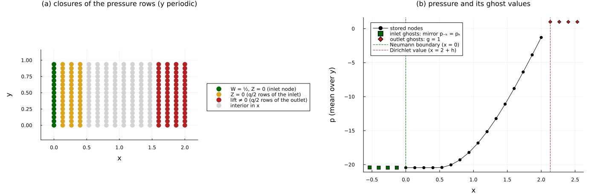

Velocity–pressure formulation
In this tutorial we explain how every boundary condition and every boundary correction of the velocity–pressure (primitive-variable) formulation is implemented: the closures of the finite-difference operators of DifferentialOpsScalar and DifferentialOps, the Laplacians kronecker_laplacian and symmetrized_laplacian, and the pressure system of the Chorin projection (ChorinCache, poisson_rhs).
The whole construction relies on a single idea. Every operator of DifferenTT is the interior central stencil of order $q$, completed by values at nodes that are not stored, the ghost nodes. A boundary condition is a rule that gives those ghost values. When the rule involves the unknowns, substituting it changes the operator, i.e. a few of its rows next to the boundary; when it involves only data, it adds a known vector, a lift, to the right-hand side. Each section below is one instance of this idea, and says which of the two cases it is.
We proceed as follows. We first fix the grid and the stencils (Sec. 1), and then treat the closures one by one: periodic wrapping (Sec. 2), truncation at Dirichlet and open sides (Sec. 3), the lift of Dirichlet data (Sec. 4), the boundary rows of the divergence (Sec. 5), the Neumann mirror (Sec. 6) and the weight that makes it symmetric (Sec. 7). We then turn to singular systems (Sec. 8), and finally assemble the pressure system of the channel of Sec. 5.2 of Torrente et al., Factorized approximate inverse preconditioners in the tensor train format, term by term (Sec. 9). Each closure is printed on a grid of 8 to 16 nodes per axis and checked against a dense matrix built by hand from the ghost-node rule; all the checks run in this tutorial, and their results are printed.
Several of the functions we call are not exported: some are public (such as onedim_differential_operator or poisson_rhs), and the others are internal (such as neumann_correction_matrix or ∇p_correction). We call them qualified, DifferenTT.name, and show the internal ones only to expose the construction; a user builds the operators of a field with the exported functions named in each section.
using DifferenTT
using ITensors, ITensorMPS
using LinearAlgebra
using Plots
using Printf
using StableRNGs
rng = StableRNG(1729);The dense checks contract MPOs of up to 8 sites into matrices, i.e. ITensors with 16 indices, for which ITensors warns by default; we raise the threshold.
ITensors.set_warn_order(18);Every dense check compares the library with a reference that is written term by term from the ghost-node rules, without calling the code under test. For one dimension, ghost_operator places the coefficient $c_k$ of row $i$ on column $i + k$, and when that column is a ghost node it drops the coefficient (:truncate), moves it to the mirror node (:mirror) or wraps it around (:wrap).
function ghost_operator(order, n, left, right; q)
D = zeros(n, n)
for i in 1:n, (k, c) in DifferenTT.derivative_coefficients(order; stencil_order=q)
j = i + k
side = j < 1 ? left : (j > n ? right : :stored)
if side == :stored
D[i, j] += c
elseif side == :mirror
D[i, j < 1 ? 2 - j : 2n - j] += c
elseif side == :wrap
D[i, mod1(j, n)] += c
end
end
return D
end;The eighth-order coefficients are fractions with the common denominators 840 (first derivative) and 5040 (second derivative), so we print the operators multiplied by these factors, as integers.
scale(order, q) = Dict((1, 2) => 2, (1, 8) => 840, (2, 2) => 1, (2, 8) => 5040)[(order, q)]
as_integers(D, order, q) = round.(Int, scale(order, q) .* Matrix(D));1. Setting: the grid, the stencils and the interior operator
The velocity–pressure formulation stores the boundary nodes. The Grid of an axis of length $L$ with $n$ nodes therefore places one node at each end, with the spacing $h = L/(n - 1)$, and we number its nodes from 0, so that node $u_j$ sits at $x_j = j h$, $j = 0, \dots, n - 1$. The ghost nodes are $u_{-1}, u_{-2}, \dots$ beyond the left end and $u_n, u_{n+1}, \dots$ beyond the right end, at the same spacing. (The matrices that Julia prints below are indexed from 1, so their row $i$ is node $u_{i-1}$.)
grid16 = Grid(QTTArchitecture((4,)), 1.0)
grid16.dx[1], first(grid16.points[1]), last(grid16.points[1])(0.06666666666666667, 0.0, 1.0)The derivatives are central finite differences of order $q$: derivative_coefficients returns the coefficients $c_k$, $|k| \le q/2$, such that
\[h^m \, u^{(m)}(x_j) \approx \sum_{k=-q/2}^{q/2} c_k \, u_{j+k},\]
where $m$ is the derivative order. The library provides $q = 2$ and $q = 8$, and returns the coefficients up to $|k| = 4$ in both cases (zero beyond $q/2$). We print them for $k = -4, \dots, 4$, the first derivative in the first two rows and the second derivative in the last two, as exact fractions.
coefficient_table = [
rationalize(DifferenTT.derivative_coefficients(m; stencil_order=q)[k]) for
(m, q) in ((1, 2), (1, 8), (2, 2), (2, 8)), k in -4:4
]4×9 Matrix{Rational{Int64}}:
0 0 0 -1//2 0 1//2 0 0 0
1//280 -4//105 1//5 -4//5 0 4//5 -1//5 4//105 -1//280
0 0 0 1 -2 1 0 0 0
-1//560 8//315 -1//5 8//5 -205//72 8//5 -1//5 8//315 -1//560Away from the boundaries, the operator is the band Toeplitz matrix $D_{ij} = c_{j-i}$. In the QTT format, a shift by a fixed offset has an exact MPO of bond dimension 2, since adding the offset to a binary index carries one bit from each site to the next (Kazeev & Khoromskij, 2012). toeplitz_mpo builds the whole band at once, with bond dimension 3, except for the last bond, which has dimension 9 when the coefficients reach the offsets $\pm 4$. Since derivative_coefficients returns the offsets up to $\pm 4$ for both stencil orders, the operators of the library have this last bond of 9 also for $q = 2$ (with zero coefficients beyond $\pm 1$), whatever the number of sites. We list the bond dimensions of the second-derivative band on $2^4$, $2^7$ and $2^{10}$ nodes.
truncate_bc = BoundaryCond1d(DirichletBC(0.0), DirichletBC(0.0))
function band_bonds(N, q)
linkdims(
DifferenTT.toeplitz_mpo(siteinds(2, N), DifferenTT.derivative_coefficients(2; stencil_order=q), truncate_bc)
)
end
(q2=[band_bonds(N, 2) for N in (4, 7, 10)], q8=[band_bonds(N, 8) for N in (4, 7, 10)])(q2 = [[3, 3, 9], [3, 3, 3, 3, 3, 9], [3, 3, 3, 3, 3, 3, 3, 3, 9]], q8 = [[3, 3, 9], [3, 3, 3, 3, 3, 9], [3, 3, 3, 3, 3, 3, 3, 3, 9]])As a first dense check, the band of the MPO on $2^4$ nodes, contracted to a matrix, is the Toeplitz matrix with its entries outside the matrix dropped, which ghost_operator builds with :truncate on both sides.
toeplitz_check = [
maximum(
abs,
contract_mpo(
DifferenTT.toeplitz_mpo(siteinds(2, 4), DifferenTT.derivative_coefficients(2; stencil_order=q), truncate_bc)
) - ghost_operator(2, 16, :truncate, :truncate; q),
) for q in (2, 8)
]2-element Vector{Float64}:
0.0
0.0All the closures of this tutorial complete this band on its first and last $q/2$ rows, whose stencils reach the ghost nodes. The figure below shows the ghost nodes of an axis of 8 nodes for $q = 8$, and what each boundary condition puts on them; the next sections derive each row of the figure.
subscript(j) = (j < 0 ? "₋" : "") * join(Char(0x2080 + d) for d in reverse(digits(abs(j))))
function ghost_diagram(n)
stored, ghosts = 0:(n-1), [-4:-1; n:(n+3)]
fig = plot(;
size=(1000, 400),
xlims=(-5, n + 4),
ylims=(0.3, 3.9),
yticks=([1, 2, 3], ["Neumann", "Dirichlet, open", "periodic"]),
xticks=(-4:(n+3), string.(-4:(n+3))),
xlabel="x / h",
legend=:none,
grid=false,
bottom_margin=6Plots.mm,
title="Ghost nodes (open circles) of an axis of $n stored nodes, q = 8",
)
marker(x, row; kwargs...) = plot!(fig, [x, x], [row - 0.2, row + 0.2]; linewidth=1.5, kwargs...)
for row in 1:3
scatter!(fig, stored, fill(row, n); color=:black, markersize=6)
scatter!(fig, ghosts, fill(row, 8); color=:white, markerstrokecolor=:gray, markersize=6)
for j in stored
annotate!(fig, j, row + 0.28, text("u" * subscript(j), 8, :black))
end
end
# Periodic: the ghost node is the image node; with the periodic flag, node n is the image of node 0
for j in ghosts
annotate!(fig, j, 3.28, text("u" * subscript(mod(j, n)), 8, :royalblue))
end
marker(n, 3; color=:royalblue, linestyle=:dot)
annotate!(fig, n, 2.68, text("L = nh (period)", 8, :royalblue))
# Dirichlet and open: the operator drops the ghost values (zero); a Dirichlet lift fills them with g
for j in ghosts
annotate!(fig, j, 2.28, text("g", 9, :firebrick))
end
scatter!(fig, [-1, n], [2, 2]; markershape=:diamond, color=:firebrick, markersize=8)
annotate!(fig, -1, 1.68, text("g at x = -h", 8, :firebrick))
annotate!(fig, n, 1.68, text("g at x = L + h", 8, :firebrick))
annotate!(fig, (n - 1) / 2, 1.68, text("operator: 0 on every ghost; lift: g on every ghost", 8, :firebrick))
# Neumann: the ghost values mirror the stored ones about the boundary node, u₋ₖ = uₖ
for k in 1:4
annotate!(fig, -k, 1.28, text("u" * subscript(k), 8, :darkgreen))
annotate!(fig, n - 1 + k, 1.28, text("u" * subscript(n - 1 - k), 8, :darkgreen))
end
marker(0, 1; color=:darkgreen, linestyle=:dash)
marker(n - 1, 1; color=:darkgreen, linestyle=:dash)
annotate!(fig, 0, 0.68, text("boundary at x = 0", 8, :darkgreen))
annotate!(fig, n - 1, 0.68, text("boundary at x = L", 8, :darkgreen))
return fig
end
ghost_diagram(8)
The diamonds mark where a Dirichlet value is located: on the first ghost node, one spacing beyond the last stored node (Sec. 4), i.e. at $x = -h$ and $x = L + h$ on the Grid, whose stored nodes span $[0, L]$ with $L = (n - 1) h$. A Neumann boundary, in contrast, lies on the stored node itself (dashed lines, Sec. 6), and the period of a periodic axis is $n h$ (dotted line, Sec. 2), which is why a periodic axis needs a different grid.
2. Periodic sides: the ghost node is the image node
On a periodic axis the field repeats with the period of the axis, so no information is missing: a ghost node is the image of a stored node, $u_{j} = u_{j \bmod n}$. Substituting this rule involves only the unknowns, so it changes the operator and adds nothing to the right-hand side: the band wraps around and the operator becomes the circulant matrix $D_{ij} = \sum_{k \equiv j - i \ (\mathrm{mod}\ n)} c_k$. The sum matters on short axes: on 8 nodes with $q = 8$, the offsets $-4$ and $4$ land on the same node and their coefficients add up. We print the second-derivative operator of 8 nodes for $q = 2$ and $q = 8$, scaled as integers.
periodic = BoundaryCond1d(PeriodicBC(), PeriodicBC())
arch8 = TTArchitecture((8,))
as_integers(DifferenTT.onedim_differential_operator(2, arch8, 1, periodic; stencil_order=2), 2, 2)8×8 Matrix{Int64}:
-2 1 0 0 0 0 0 1
1 -2 1 0 0 0 0 0
0 1 -2 1 0 0 0 0
0 0 1 -2 1 0 0 0
0 0 0 1 -2 1 0 0
0 0 0 0 1 -2 1 0
0 0 0 0 0 1 -2 1
1 0 0 0 0 0 1 -2as_integers(DifferenTT.onedim_differential_operator(2, arch8, 1, periodic; stencil_order=8), 2, 8)8×8 Matrix{Int64}:
-14350 8064 -1008 128 -18 128 -1008 8064
8064 -14350 8064 -1008 128 -18 128 -1008
-1008 8064 -14350 8064 -1008 128 -18 128
128 -1008 8064 -14350 8064 -1008 128 -18
-18 128 -1008 8064 -14350 8064 -1008 128
128 -18 128 -1008 8064 -14350 8064 -1008
-1008 128 -18 128 -1008 8064 -14350 8064
8064 -1008 128 -18 128 -1008 8064 -14350In the corners of the second matrix, $-18 = 2 \times (-9)$ is the sum of $c_{-4}$ and $c_4$. The function onedim_differential_operator returns a dense matrix for a TTArchitecture and an MPO for a QTTArchitecture; in QTT, toeplitz_mpo builds the circulant directly, by replacing the shift of the first site with its cyclic version, so the bond dimensions are those of Sec. 1. The QTT operator needs at least 4 sites, so we check it on $2^4$ nodes. Here, and in all the following sections, the dense check runs over both derivative orders and both stencil orders, and prints the largest entry of the difference with the hand reference.
arch12, qtt16 = TTArchitecture((12,)), QTTArchitecture((4,))
function closure_errors(bc, left, right)
return maximum(
max(
maximum(
abs,
DifferenTT.onedim_differential_operator(m, arch12, 1, bc; stencil_order=q) -
ghost_operator(m, 12, left, right; q),
),
maximum(
abs,
contract_mpo(DifferenTT.onedim_differential_operator(m, qtt16, 1, bc; stencil_order=q)) -
ghost_operator(m, 16, left, right; q),
),
) for m in (1, 2), q in (2, 8)
)
end
closure_errors(periodic, :wrap, :wrap)0.0The circulant has the period $n h$, which equals the length $L$ of the axis only if the node at $L$ is not stored, since it is the image of the node at 0. The plain Grid stores it, $h = L/(n - 1)$, so the wrapped stencil has the period $L + h$ and is inconsistent at the seam. A periodic axis therefore needs Grid(arch, L; periodic), whose spacing is $h = L/n$. The flags can be taken from the boundary conditions with periodic_axes. We apply the wrapped second derivative of $q = 8$ on $2^6$ nodes to $u(x) = \sin(2\pi x / L)$ on both grids, and print the spacing and the largest relative error against $u'' = -(2\pi/L)^2 u$.
L = 1.0
arch64 = QTTArchitecture((6,))
D2_wrapped = contract_mpo(DifferenTT.onedim_differential_operator(2, arch64, 1, periodic; stencil_order=8))
function wrapped_error(grid)
u = sin.(2π .* grid.points[1] ./ L)
return maximum(abs, D2_wrapped * u ./ grid.dx[1]^2 .+ (2π / L)^2 .* u) / (2π / L)^2
end
flagged = Grid(arch64, (L,); periodic=periodic_axes(BoundaryConditions(periodic)))
plain = Grid(arch64, L)
(flagged=(flagged.dx[1], wrapped_error(flagged)), plain=(plain.dx[1], wrapped_error(plain)))(flagged = (0.015625, 2.764712373579582e-12), plain = (0.015873015873015872, 14.263956647091115))With the flag, the error is that of the eighth-order stencil, $3 \cdot 10^{-12}$; without it, the stencil is inconsistent near the seam, and the relative error is 14. The flag is opt-in, and a Grid built without it is unchanged in v0.1. In this tutorial every periodic axis is built with the flag.
3. Dirichlet and open sides: truncation
At a non-periodic side, the ghost values are not given by the unknowns, and the operators of the library do not extrapolate them: they truncate the stencil, i.e. they drop the entries that fall outside the grid, which amounts to taking the ghost values as zero. The rows that change are those within $q/2$ of the side, which DifferenTT.stencil_rows returns for the left side (the right side has their mirror images).
DifferenTT.stencil_rows(2), DifferenTT.stencil_rows(8)([1], [1, 2, 3, 4])We print the truncated second derivative on 12 nodes for $q = 8$, scaled as integers: its first and last four rows miss the coefficients of the ghost nodes they reach, and every other row is the full stencil.
as_integers(DifferenTT.onedim_differential_operator(2, arch12, 1, truncate_bc; stencil_order=8), 2, 8)12×12 Matrix{Int64}:
-14350 8064 -1008 128 -9 … 0 0 0 0
8064 -14350 8064 -1008 128 0 0 0 0
-1008 8064 -14350 8064 -1008 0 0 0 0
128 -1008 8064 -14350 8064 0 0 0 0
-9 128 -1008 8064 -14350 -9 0 0 0
0 -9 128 -1008 8064 … 128 -9 0 0
0 0 -9 128 -1008 -1008 128 -9 0
0 0 0 -9 128 8064 -1008 128 -9
0 0 0 0 -9 -14350 8064 -1008 128
0 0 0 0 0 8064 -14350 8064 -1008
0 0 0 0 0 … -1008 8064 -14350 8064
0 0 0 0 0 128 -1008 8064 -14350Both DirichletBC and OpenBC give this truncated operator, and the boundary value of a DirichletBC does not enter it. The dense check covers both, against ghost_operator with :truncate.
open_bc = BoundaryCond1d(OpenBC(), OpenBC())
(dirichlet=closure_errors(truncate_bc, :truncate, :truncate), open=closure_errors(open_bc, :truncate, :truncate))(dirichlet = 0.0, open = 0.0)Since a zero ghost value is not a consistent extrapolation of a smooth field, the truncated rows are not consistent approximations of the derivatives, and the two boundary types differ in what is done about it. On a DirichletBC side, the lift of Sec. 4 restores the dropped coefficients with the boundary value on the right-hand side of the pressure system, and the projector of Sec. 5 holds the truncated rows fixed in the explicit time steps and removes them from the divergence. On an OpenBC side nothing else acts: no lift is added, and its rows are evolved by the explicit steps with the truncated stencils, so an OpenBC side imposes in practice zero ghost values on every operator. DifferenTT.onedim_boundary_nullifier, the projector of Sec. 5, returns nothing for it.
isnothing(DifferenTT.onedim_boundary_nullifier(arch12, 1, open_bc; stencil_order=8))true4. Non-homogeneous Dirichlet data: the lift
The truncation of Sec. 3 took the ghost values as zero. When the ghost nodes beyond a Dirichlet side hold a known value $g$ instead, the full stencil differs from the truncated one by the dropped coefficients times $g$, and since this difference involves only data, it moves to the right-hand side as a lift. On the left side, row $i$ (counted from 1) reaches the ghost nodes $u_{-1}, \dots, u_{-(q/2 - i + 1)}$ with the coefficients $c_{-i}, \dots, c_{-q/2}$, so that, when every ghost node holds $g$, the missing contribution is
\[\ell_i = \frac{g}{h^m} \sum_{k=-q/2}^{-i} c_k, \qquad i = 1, \dots, q/2,\]
where $m$ is the derivative order. DifferenTT.onedim_left_dirichlet_correction stores these sums as the product of an upper triangular Toeplitz block $C_L$, of first row $(c_{-4}, c_{-3}, c_{-2}, c_{-1})$, with the all-ones vector: $(C_L \mathbf{1})_i = \sum_{k=-4}^{-i} c_k$. We print the corner block of the second derivative for $q = 2$ and $q = 8$, scaled as integers.
left_block(q) = DifferenTT.onedim_left_dirichlet_correction(2, arch12, 1; stencil_order=q)[1:4, 1:4]
as_integers(left_block(2), 2, 2)4×4 Matrix{Int64}:
0 0 0 1
0 0 0 0
0 0 0 0
0 0 0 0as_integers(left_block(8), 2, 8)4×4 Matrix{Int64}:
-9 128 -1008 8064
0 -9 128 -1008
0 0 -9 128
0 0 0 -9Note that the columns of $C_L$ are not ghost nodes: the block is only meaningful applied to a vector that is constant along the axis, which is how the library uses it. For $q = 2$, only row 1 receives $c_{-1} g$. The block is DifferenTT.corner_pick_matrix of the four coefficients, i.e. DifferenTT.upper_toeplitz_matrix (its right counterpart is DifferenTT.lower_toeplitz_matrix); in QTT, DifferenTT.corner_pick_mpo places it in the corner of an MPO of bond dimension at most 2, which on $2^4$ nodes contracts to the zero-padded block:
left_coefficients(q) = [DifferenTT.derivative_coefficients(2; stencil_order=q)[k] for k in -4:-1]
corner_qtt = contract_mpo(DifferenTT.corner_pick_mpo(left_coefficients(8), siteinds(2, 4), :upper))
corner_dense = zeros(16, 16)
corner_dense[1:4, 1:4] = DifferenTT.corner_pick_matrix(left_coefficients(8), :upper)
maximum(abs, corner_qtt - corner_dense)0.0The right side is the mirror image, DifferenTT.onedim_right_dirichlet_correction, a lower triangular block in the bottom-right corner. The dense check of the lift compares, on each row, the truncated operator applied to the stored values plus the lifts of both sides with the full stencil applied to the vector extended with the ghost values. The reference ghost_stencil applies the stencil along one axis of an array of any dimension, with a ghost rule for each side: a value (a number, or one value per node of the other axis), :mirror or :wrap.
function ghost_stencil(F, order, axis, q, h, left, right)
out = zeros(size(F))
n = size(F, axis)
for idx in CartesianIndices(F), (k, c) in DifferenTT.derivative_coefficients(order; stencil_order=q)
j = idx[axis] + k
rule = j < 1 ? left : (j > n ? right : :stored)
if rule isa Symbol
jj = if rule == :stored
j
elseif rule == :mirror
(j < 1 ? 2 - j : 2n - j)
else
mod1(j, n)
end
out[idx] += c * F[CartesianIndex(Base.setindex(Tuple(idx), jj, axis))]
else
out[idx] += c * (rule isa Number ? rule : rule[idx[3-axis]])
end
end
return out ./ h^order
end;We take the values $g_L = 0.7$ and $g_R = -1.3$, a random vector of stored values, and $h = 1$; the check runs over both derivative orders and stencil orders, in TT (12 nodes) and QTT ($2^4$ nodes).
g_left, g_right = 0.7, -1.3
function lift_error(arch, n, q, m)
to_matrix(op) = op isa MPO ? contract_mpo(op) : op
D = to_matrix(DifferenTT.onedim_differential_operator(m, arch, 1, truncate_bc; stencil_order=q))
C_L = to_matrix(DifferenTT.onedim_left_dirichlet_correction(m, arch, 1; stencil_order=q))
C_R = to_matrix(DifferenTT.onedim_right_dirichlet_correction(m, arch, 1; stencil_order=q))
u = randn(rng, n)
lifted = D * u + g_left * C_L * ones(n) + g_right * C_R * ones(n)
return maximum(abs, lifted - ghost_stencil(u, m, 1, q, 1.0, g_left, g_right))
end
maximum(max(lift_error(arch12, 12, q, m), lift_error(qtt16, 16, q, m)) for q in (2, 8), m in (1, 2))8.881784197001252e-16The library scales these blocks by $g/h^m$ and lifts them to $N$ dimensions with ndim_operator_mpo: DifferenTT.scalar_dirichlet_correction_dim returns, for one axis, the operator $C$ whose product with the all-ones MPS is the lift, and scalar_dirichlet_correction sums it over the axes. We check the two-dimensional case on a $2^4 \times 2^4$ QTT grid of the box $[0, 1] \times [0, 1.3]$, with a different value on each face, for both stencil orders: the second derivatives of DifferentialOpsScalar plus the lift equal the full stencils on the ghost-extended array. The values of an MPS on this grid are read with as_array, which reshapes the dense vector of contract_mps (site 1 most significant, so $x$ is the slower index).
arch2d = QTTArchitecture((4, 4))
sites2d = siteinds(arch2d)
grid2d = Grid(arch2d, (1.0, 1.3))
as_array(mps, arch) = permutedims(reshape(contract_mps(mps), reverse(variable_dims(arch))...))
face_values = (0.7, -1.3, 2.0, 0.5) # x = 0, x = L₁, y = 0, y = L₂
faces = BoundaryConditions(
BoundaryCond1d(DirichletBC(face_values[1]), DirichletBC(face_values[2])),
BoundaryCond1d(DirichletBC(face_values[3]), DirichletBC(face_values[4])),
)
dirichlet_field = ScalarField(sites2d, arch2d, faces)
p_random = random_mps(rng, sites2d; linkdims=4)
P = as_array(p_random, arch2d)
function lift_error_2d(q)
ops = DifferentialOpsScalar(grid2d, dirichlet_field; stencil_order=q)
C = scalar_dirichlet_correction(dirichlet_field, grid2d, 2; stencil_order=q)
lifted = as_array(apply(ops.d2_ops[1], p_random) + apply(ops.d2_ops[2], p_random), arch2d)
lifted .+= as_array(apply(C, ones_mps(sites2d, 1)), arch2d)
reference = sum(ghost_stencil(P, 2, a, q, grid2d.dx[a], face_values[2a-1], face_values[2a]) for a in 1:2)
return maximum(abs, lifted - reference) / maximum(abs, reference)
end
(q2=lift_error_2d(2), q8=lift_error_2d(8))(q2 = 5.1726844196219694e-15, q8 = 6.35511422702837e-14)A face whose value varies along it, $g(y)$, needs the lift $\frac{1}{h^m} (C \otimes \mathbb{I})\, \mathbf{g}$, where $\mathbf{g}$ is the profile extended along the axis of the face by face_profile_mps, since $C$ must act on a vector that is constant along its axis. face_dirichlet_lift builds this lift for one face. It serves the vorticity–streamfunction formulation, and its default stencil order is therefore $q = 2$. We check it on the left face of $x$ with the profile $g(y) = \sin(\pi y / 1.3)$, for both stencil orders, against the full stencil whose ghost nodes hold $g(y_j)$ on each row $y_j$.
profile = sin.(π .* grid2d.points[2] ./ 1.3)
function profile_lift_error(q)
ops = DifferentialOpsScalar(grid2d, dirichlet_field; stencil_order=q)
lift = face_dirichlet_lift(dirichlet_field, grid2d, 2, 1, :left, profile; stencil_order=q)
lifted = as_array(apply(ops.d2_ops[1], p_random), arch2d) + as_array(lift, arch2d)
reference = ghost_stencil(P, 2, 1, q, grid2d.dx[1], profile, 0.0)
return maximum(abs, lifted - reference) / maximum(abs, reference)
end
(q2=profile_lift_error(2), q8=profile_lift_error(8))(q2 = 1.9426838005428144e-15, q8 = 2.7929953180779273e-15)This construction also fixes where the Dirichlet value is located. The lift puts $g$ on the ghost nodes, and the stored boundary node $u_0$ stays an unknown, so the value sits on the first ghost node, one spacing beyond the last stored node: at $x = -h$ and $x = L + h$ on the Grid of Sec. 1, as the diamonds of the ghost-node diagram show. A Dirichlet problem posed on $[0, L]$ must therefore use a grid whose first ghost nodes are the boundary points, which is what interior_grid builds (see the tutorial on the Poisson equation in one dimension).
The lift fills every ghost node with the same value $g$, and here the two stencil orders behave differently. For $q = 2$ only the first ghost node is reached, and the closure is exact for a linear field. For $q = 8$ the nodes $u_{-2}, u_{-3}, u_{-4}$ also hold $g$ instead of the extrapolated values, which leaves an error of order $1/h$ on the first rows of the second derivative; the solution of a Poisson problem is then only first-order accurate. This is a known limitation of v0.1 (issue #51), whose planned fix for v0.2 is the odd reflection about the first ghost node, $u_{-1-k} = 2g - u_{-1+k}$. We show it on the linear field $u(x) = 1 + x$, with the values $u(-h)$ and $u(L + h)$ of the two first ghost nodes as Dirichlet data. Its exact second derivative is zero, and we print the largest entry of the lifted second derivative on $2^4$ and $2^5$ nodes of the Grid of $[0, 1]$, for both stencil orders.
function linear_field_residual(n, q)
arch = TTArchitecture((n,))
h = 1 / (n - 1)
u = 1 .+ h .* (0:(n-1))
D = DifferenTT.onedim_differential_operator(2, arch, 1, truncate_bc; stencil_order=q)
C_L = DifferenTT.onedim_left_dirichlet_correction(2, arch, 1; stencil_order=q)
C_R = DifferenTT.onedim_right_dirichlet_correction(2, arch, 1; stencil_order=q)
return maximum(abs, (D * u + (1 - h) * C_L * ones(n) + (1 + n * h) * C_R * ones(n)) / h^2)
end
[(n=n, h=1 / (n - 1), q2=linear_field_residual(n, 2), q8=linear_field_residual(n, 8)) for n in (16, 32)]2-element Vector{@NamedTuple{n::Int64, h::Float64, q2::Float64, q8::Float64}}:
(n = 16, h = 0.06666666666666667, q2 = 4.9960036108132044e-14, q8 = 2.318452380952396)
(n = 32, h = 0.03225806451612903, q2 = 2.133848653329551e-13, q8 = 4.791468253968327)Halving $h$ doubles the residual of $q = 8$, while $q = 2$ stays at the round-off.
Finally, the value of a DirichletBC enters only through this lift, which scalar_dirichlet_correction_dim builds and only the Chorin projection uses: in the right-hand side of the pressure system (poisson_rhs) and in the pressure gradient of the projection (Sec. 9). The explicit time steppers do not impose it: as we show in Sec. 5, they hold the rows next to a Dirichlet side at the values of the initial field. A velocity with a Dirichlet side is therefore fixed on its stored boundary node and the next $q/2 - 1$ nodes, whereas the pressure value sits on the first ghost node. We confirm that the value does not enter the operators: the first and second derivatives of the field above are the same if all its faces hold the value 5.
shifted_faces = BoundaryConditions(
BoundaryCond1d(DirichletBC(5.0), DirichletBC(5.0)), BoundaryCond1d(DirichletBC(5.0), DirichletBC(5.0))
)
ops_values = DifferentialOpsScalar(grid2d, dirichlet_field; stencil_order=8)
ops_shifted = DifferentialOpsScalar(grid2d, ScalarField(sites2d, arch2d, shifted_faces); stencil_order=8)
maximum(
maximum(abs, contract_mpo(a[i]) - contract_mpo(b[i])) for
(a, b) in ((ops_values.d_ops, ops_shifted.d_ops), (ops_values.d2_ops, ops_shifted.d2_ops)), i in 1:2
)0.05. Boundary rows of the divergence
The truncated rows of Sec. 3 are not consistent approximations of the derivatives, and the velocity–pressure formulation removes them from the two places where they would act. The projector
\[Z = \mathbb{I} - \sum_{r \in R} \mathbf{e}_r \mathbf{e}_r^\top,\]
where $R$ holds the $q/2$ rows next to each DirichletBC side, is built by DifferenTT.onedim_boundary_nullifier in one dimension; it is the identity with zeros on those rows. We print its diagonal on 12 nodes, for a Dirichlet left side and a Neumann right side, and check the QTT version on $2^4$ nodes against the same mask.
inlet_outlet = BoundaryCond1d(DirichletBC(1.0), NeumannBC(0.0))
Z12 = DifferenTT.onedim_boundary_nullifier(arch12, 1, inlet_outlet; stencil_order=8)
Int.(diag(Z12))12-element Vector{Int64}:
0
0
0
0
1
1
1
1
1
1
1
1mask16 = [i <= 4 ? 0.0 : 1.0 for i in 1:16]
maximum(
abs, contract_mpo(DifferenTT.onedim_boundary_nullifier(qtt16, 1, inlet_outlet; stencil_order=8)) - Diagonal(mask16)
)6.661338147750939e-16In $N$ dimensions, BoundaryNullScalar multiplies the one-dimensional projectors of every axis, lifted by ndim_operator_mpo, so it zeroes every row next to a Dirichlet side of any axis; BoundaryNull collects one per component of a velocity field, each built from the conditions of its own component. The time steppers apply it to the right-hand side of the predictor (NavierStokesPredictorRHS), so that an explicit step leaves the field on those rows at its initial values: this is how a Dirichlet velocity is imposed.
The divergence needs a different selection. Its term $\partial_i u_i$ is the first derivative of component $i$ along axis $i$, which is truncated only within $q/2$ rows of a Dirichlet side of component $i$ on that axis. divergence_dirichlet_correction therefore multiplies, for each axis $i$, the projector of component $i$ along axis $i$ only. We take the velocity of the channel of Sec. 9, on the $2^4 \times 2^4$ QTT grid of the box $[0, 2] \times [0, 1]$, periodic in $y$: $u$ is 1 and $v$ is 0 at the inlet $x = 0$ (Dirichlet), and both are Neumann at the outlet $x = 2$. Both components hold their inlet rows fixed in the time steps, and the divergence drops the inlet rows of $\partial_x u$. We print the diagonals of the three projectors, reshaped on the grid, for the first six columns $x_0, \dots, x_5$ and the first row $y_0$ (every row $y_j$ is the same).
channel_arch = QTTArchitecture((4, 4))
channel_sites = siteinds(channel_arch)
u_bcs = BoundaryConditions(BoundaryCond1d(DirichletBC(1.0), NeumannBC(0.0)), periodic)
v_bcs = BoundaryConditions(BoundaryCond1d(DirichletBC(0.0), NeumannBC(0.0)), periodic)
channel_grid = Grid(channel_arch, (2.0, 1.0); periodic=periodic_axes(u_bcs))
uniform = VectorField((ones_mps(channel_sites, 1), zeros_mps(channel_sites)), channel_arch, (u_bcs, v_bcs))
diagonal_on_grid(Z) = as_array(apply(Z, ones_mps(channel_sites, 1)), channel_arch)
held_u, held_v = (diagonal_on_grid(BoundaryNull(uniform; stencil_order=8)[i].u_row_deleter) for i in 1:2)
removed = diagonal_on_grid(divergence_dirichlet_correction(uniform; stencil_order=8))
(u_held=round.(Int, held_u[1:6, 1]), v_held=round.(Int, held_v[1:6, 1]), divergence_kept=round.(Int, removed[1:6, 1]))(u_held = [0, 0, 0, 0, 1, 1], v_held = [0, 0, 0, 0, 1, 1], divergence_kept = [0, 0, 0, 0, 1, 1])Why the divergence needs this is seen on the uniform inflow $\mathbf{u} = (1, 0)$, which is divergence-free. Its truncated $\partial_x u$ takes the ghost values of $u$ at the inlet as zero, so the first four columns see a jump from 0 to 1 and the divergence is of order $1/h$ there; at the outlet the Neumann mirror gives exactly zero. We print the largest divergence of each of the first six columns before the projector, and the largest one after it.
channel_ops = DifferentialOps(channel_grid, uniform; stencil_order=8)
div_uniform = divergence(Tuple(last(uniform)), channel_ops)
div_removed = apply(divergence_dirichlet_correction(uniform; stencil_order=8), div_uniform)
(
before=round.(vec(maximum(abs, as_array(div_uniform, channel_arch); dims=2))[1:6]; sigdigits=4),
after=maximum(abs, as_array(div_removed, channel_arch)),
)(before = [4.759, 1.241, 0.2589, 0.02679, 4.844e-15, 1.263e-15], after = 3.202206554530601e-15)The source of the pressure equation is therefore zero on the $q/2$ columns next to a Dirichlet velocity face: there the pressure satisfies the homogeneous equation, up to its own lifts and closures, instead of responding to a source of order $1/h$ that is an artifact of the truncation and not a property of the flow.
The selection by component is visible when only the tangential component has a Dirichlet side: a velocity whose $u$ is Neumann and whose $v$ is Dirichlet at $x = 0$ holds the inlet rows of $v$ in the time steps, but removes no row from the divergence, since $\partial_y v$ is not truncated at $x = 0$.
tangential = VectorField(
(ones_mps(channel_sites, 1), zeros_mps(channel_sites)),
channel_arch,
(BoundaryConditions(BoundaryCond1d(NeumannBC(0.0), NeumannBC(0.0)), periodic), v_bcs),
)
(
v_held=round.(Int, diagonal_on_grid(BoundaryNull(tangential; stencil_order=8)[2].u_row_deleter)[1:6, 1]),
divergence_projector=divergence_dirichlet_correction(tangential; stencil_order=8),
)(v_held = [0, 0, 0, 0, 1, 1], divergence_projector = nothing)6. Homogeneous Neumann sides: the mirror
A homogeneous Neumann condition, $\partial u / \partial n = 0$, is imposed at the outlet of the channel for the velocity and at its inlet for the pressure. In the library the boundary lies on the stored node $u_0$, and the ghost values are the mirror images of the stored ones about it,
\[u_{-k} = u_k, \qquad u_{n-1+k} = u_{n-1-k}, \qquad k = 1, \dots, q/2,\]
which makes every central first difference at $u_0$ vanish, since $c_{-k} = -c_k$. This rule involves the unknowns, so substituting it changes the operator: the coefficient $c_{-k}$ that row $i$ applies to a ghost node moves to the stored node at the mirror position. DifferenTT.neumann_correction_matrix returns this change as a $q \times q$ corner block $M$, which is subtracted from the truncated operator, $D_\text{closed} = D - M$. We print the left block of the second derivative for $q = 2$, and for $q = 8$ scaled as integers.
neumann_bc = BoundaryCond1d(NeumannBC(0.0), NeumannBC(0.0))
DifferenTT.neumann_correction_matrix(2, :left; stencil_order=2)2×2 Matrix{Float64}:
-0.0 -1.0
0.0 0.0as_integers(DifferenTT.neumann_correction_matrix(2, :left; stencil_order=8), 2, 8)8×8 Matrix{Int64}:
0 -8064 1008 -128 9 0 0 0
0 1008 -128 9 0 0 0 0
0 -128 9 0 0 0 0 0
0 9 0 0 0 0 0 0
0 0 0 0 0 0 0 0
0 0 0 0 0 0 0 0
0 0 0 0 0 0 0 0
0 0 0 0 0 0 0 0Row 1 of the second block (node $u_0$) receives $c_{-1}, \dots, c_{-4}$ on the columns of $u_1, \dots, u_4$, row 2 (node $u_1$) receives $c_{-2}, c_{-3}, c_{-4}$ on $u_1, u_2, u_3$, and so on: the minus sign of $M$ is only the convention of the subtraction. The closed operators of 8 nodes for $q = 2$ and of 12 nodes for $q = 8$ are:
as_integers(DifferenTT.onedim_differential_operator(2, arch8, 1, neumann_bc; stencil_order=2), 2, 2)8×8 Matrix{Int64}:
-2 2 0 0 0 0 0 0
1 -2 1 0 0 0 0 0
0 1 -2 1 0 0 0 0
0 0 1 -2 1 0 0 0
0 0 0 1 -2 1 0 0
0 0 0 0 1 -2 1 0
0 0 0 0 0 1 -2 1
0 0 0 0 0 0 2 -2as_integers(DifferenTT.onedim_differential_operator(2, arch12, 1, neumann_bc; stencil_order=8), 2, 8)12×12 Matrix{Int64}:
-14350 16128 -2016 256 -18 … 0 0 0 0
8064 -15358 8192 -1017 128 0 0 0 0
-1008 8192 -14359 8064 -1008 0 0 0 0
128 -1017 8064 -14350 8064 0 0 0 0
-9 128 -1008 8064 -14350 -9 0 0 0
0 -9 128 -1008 8064 … 128 -9 0 0
0 0 -9 128 -1008 -1008 128 -9 0
0 0 0 -9 128 8064 -1008 128 -9
0 0 0 0 -9 -14350 8064 -1017 128
0 0 0 0 0 8064 -14359 8192 -1008
0 0 0 0 0 … -1017 8192 -15358 8064
0 0 0 0 0 256 -2016 16128 -14350DifferenTT.left_neumann_boundary_correction and DifferenTT.right_neumann_boundary_correction embed the two blocks in an operator of the size of the axis, a matrix in TT and an MPO in QTT (built on $\log_2 q$ sites and padded with zeros), and onedim_differential_operator subtracts them. The dense check compares both embeddings with the difference between the truncated and the mirrored hand operators, and the closed operators with the hand elimination for the pure Neumann axis and for the mixed Neumann–Dirichlet axis of the pressure of the channel.
function neumann_block_error(q, m)
errors = Float64[]
for (side, rules) in ((:left, (:mirror, :truncate)), (:right, (:truncate, :mirror)))
embed =
side == :left ? DifferenTT.left_neumann_boundary_correction : DifferenTT.right_neumann_boundary_correction
for (n, embedded) in (
(12, embed(m, arch12, 12; stencil_order=q)),
(16, contract_mpo(embed(m, qtt16, siteinds(2, 4); stencil_order=q))),
)
hand = ghost_operator(m, n, :truncate, :truncate; q) - ghost_operator(m, n, rules...; q)
push!(errors, maximum(abs, embedded - hand))
end
end
return maximum(errors)
end
(
blocks=maximum(neumann_block_error(q, m) for q in (2, 8), m in (1, 2)),
neumann=closure_errors(neumann_bc, :mirror, :mirror),
neumann_dirichlet=closure_errors(BoundaryCond1d(NeumannBC(0.0), DirichletBC(0.0)), :mirror, :truncate),
)(blocks = 4.440892098500626e-16, neumann = 1.847458297454807e-11, neumann_dirichlet = 1.7785906057884942e-11)The mirror moves the coefficient of row 1 onto column 2, but nothing moves the coefficient of row 2 onto column 1, so the operator is no longer symmetric: in the $q = 2$ operator above, the entry $(1, 2)$ is 2 and the entry $(2, 1)$ is 1. This is a problem for the pressure system, which is solved with CG, globally or in the local problems of ALS, and therefore needs an SPD operator. The first-derivative row of the boundary node, on the other hand, is exactly zero, as the condition requires. We print the norm of $A - A^\top$ of the mirrored second derivatives of 12 nodes, and the largest entry of the first-derivative row of $u_0$.
(
asymmetry=[
norm(ghost_operator(2, 12, :mirror, :mirror; q) - ghost_operator(2, 12, :mirror, :mirror; q)') for q in (2, 8)
],
first_derivative_row=maximum(
abs, DifferenTT.onedim_differential_operator(1, arch12, 1, neumann_bc; stencil_order=8)[1, :]
),
)(asymmetry = [2.0, 3.2253050631006968], first_derivative_row = 0.0)7. Symmetrization: the Neumann weight
The asymmetry of the mirror has a simple cure. For $q = 2$, the mirrored row of $u_0$ reads $(2u_1 - 2u_0)/h^2 = f_0$, and the second row $(u_0 - 2u_1 + u_2)/h^2 = f_1$; halving the first row gives entries $1/h^2$ on both sides of the diagonal. The halved row is the finite-volume equation of the half cell $[0, h/2]$ that the boundary node owns: integrating $u'' = f$ over it gives $u'(h/2) - u'(0) \approx (u_1 - u_0)/h = (h/2) f_0$, where $u'(0) = 0$ is the Neumann condition. Multiplying a row by a nonzero factor does not change the solution, as long as the right-hand side is multiplied by the same factor.
The library applies this weight to whole $N$-dimensional rows: $W = W_1 \otimes \dots \otimes W_N$, where $W_i$ is the identity with $1/2$ on the Neumann boundary rows of axis $i$, so that a node shared by two Neumann faces gets $1/4$, the quarter cell of a corner. In one dimension, DifferenTT.onedim_neumann_symmetrization_correction returns $-\frac{1}{2} \sum_r \mathbf{e}_r \mathbf{e}_r^\top A$, minus half of the Neumann rows of an operator $A$ (the sum of DifferenTT.left_neumann_symmetrization_correction and DifferenTT.right_neumann_symmetrization_correction), and applied to the identity it gives $W_i - \mathbb{I}$. We print the diagonal of $W_i$ on 12 nodes, and check, for both stencil orders and for a pure Neumann and a Neumann–Dirichlet axis, that $W_i A$ is symmetric while $A$ is not; in QTT, the correction of the MPO of $A$ on $2^4$ nodes is compared with the dense one.
I12 = Matrix{Float64}(I, 12, 12)
W12 = I12 + DifferenTT.onedim_neumann_symmetrization_correction(I12, arch12, 1, neumann_bc)
diag(W12)12-element Vector{Float64}:
0.5
1.0
1.0
1.0
1.0
1.0
1.0
1.0
1.0
1.0
1.0
0.5function weight_check(q, bc, rules)
A = ghost_operator(2, 12, rules...; q)
W = I12 + DifferenTT.onedim_neumann_symmetrization_correction(I12, arch12, 1, bc)
A16 = ghost_operator(2, 16, rules...; q)
C16 = DifferenTT.onedim_neumann_symmetrization_correction(mat2mpo(A16, siteinds(2, 4)), qtt16, 1, bc)
W16 = Diagonal([i in (1, 16) && (i == 1 ? rules[1] : rules[2]) == :mirror ? 0.5 : 1.0 for i in 1:16])
return (
A_asymmetry=norm(A - A'),
WA_asymmetry=norm(W * A - (W * A)'),
qtt=maximum(abs, A16 + contract_mpo(C16) - W16 * A16),
)
end
[
weight_check(q, bc, rules) for q in (2, 8),
(bc, rules) in
((neumann_bc, (:mirror, :mirror)), (BoundaryCond1d(NeumannBC(0.0), DirichletBC(0.0)), (:mirror, :truncate)))
]2×2 Matrix{@NamedTuple{A_asymmetry::Float64, WA_asymmetry::Float64, qtt::Float64}}:
(A_asymmetry = 2.0, WA_asymmetry = 0.0, qtt = 4.44089e-16) … (A_asymmetry = 1.41421, WA_asymmetry = 0.0, qtt = 4.44089e-16)
(A_asymmetry = 3.22531, WA_asymmetry = 0.0, qtt = 3.59971e-14) (A_asymmetry = 2.28064, WA_asymmetry = 0.0, qtt = 1.11022e-15)In two dimensions, neumann_weight_mpo lifts each $W_i$ with ndim_operator_mpo and multiplies them. We build it for a field on the $2^4 \times 2^4$ QTT grid of $[0, 1] \times [0, 1.3]$ with Neumann sides on both ends of $x$ and a Neumann–Dirichlet axis $y$, and print its diagonal on the nodes $x_0, x_1, x_{15}$ and $y_0, y_1, y_{15}$, together with the bond dimensions of the MPO.
mixed_bcs = BoundaryConditions(neumann_bc, BoundaryCond1d(NeumannBC(0.0), DirichletBC(0.0)))
mixed_field = ScalarField(sites2d, arch2d, mixed_bcs)
W_mpo = neumann_weight_mpo(mixed_field)
W_grid = as_array(apply(W_mpo, ones_mps(sites2d, 1)), arch2d)
(weights=round.(W_grid[[1, 2, 16], [1, 2, 16]]; digits=12), bonds=linkdims(W_mpo))(weights = [0.25 0.5 0.5; 0.5 1.0 1.0; 0.25 0.5 0.5], bonds = [2, 3, 2, 1, 2, 2, 2])The corners $(x_0, y_0)$ and $(x_{15}, y_0)$ are shared by two Neumann faces and get $1/4$; $y_{15}$ is a Dirichlet side, where the factor $W_2$ is 1. Within an axis, $W_i$ has bond dimension 3 when both sides are Neumann and 2 when one is, and the bond between the two axes of this non-interleaved QTT has dimension 1, since $W$ is a Kronecker product (an interleaved QTT threads the bonds of each axis through the other).
symmetrized_laplacian multiplies the Kronecker sum of kronecker_laplacian by this weight, $W\Delta$, and symmetrize_rhs multiplies the right-hand side by it. We check, for both stencil orders, that $W\Delta$ equals the dense product of the two, that it is symmetric, and that the weighted system has the solution of the unweighted one: we solve $-\Delta \mathbf{u} = \mathbf{f}$ and $-W\Delta \mathbf{u} = W\mathbf{f}$ densely, with a random $\mathbf{f}$ (the Dirichlet side makes both systems non-singular).
f_random = random_mps(rng, sites2d; linkdims=4)
function symmetrized_check(q)
Δ = contract_mpo(kronecker_laplacian(mixed_field, grid2d; stencil_order=q))
WΔ = contract_mpo(symmetrized_laplacian(mixed_field, grid2d; stencil_order=q))
W = contract_mpo(W_mpo)
f, Wf = contract_mps(f_random), contract_mps(symmetrize_rhs(mixed_field, f_random))
u, u_weighted = -Δ \ f, -WΔ \ Wf
return (
product=maximum(abs, WΔ - W * Δ) / maximum(abs, Δ),
asymmetry=norm(WΔ - WΔ') / norm(WΔ),
same_solution=norm(u - u_weighted) / norm(u),
)
end
(q2=symmetrized_check(2), q8=symmetrized_check(8))(q2 = (product = 3.015683072483344e-15, asymmetry = 2.1319447689893355e-15, same_solution = 1.1823137734821983e-13), q8 = (product = 2.5407827993949533e-12, asymmetry = 1.2559891656011974e-12, same_solution = 3.2428295143482215e-11))One might instead halve the boundary row of each one-dimensional operator before the Kronecker sum, $(W_1 D_{xx}) \otimes \mathbb{I} + \mathbb{I} \otimes (W_2 D_{yy})$. This operator is symmetric too, but it is not a row scaling of $\Delta$: on a Neumann row of $x$, it halves $\partial_x^2$ and keeps $\partial_y^2$, i.e. the tangential derivative gets twice the weight of the normal one, and the solution changes. This is why the library weights whole rows (the comment in symmetrized_laplacian says so). We compare the two operators for $q = 8$.
function per_axis_check(q)
D_xx = ghost_operator(2, 16, :mirror, :mirror; q) ./ grid2d.dx[1]^2
D_yy = ghost_operator(2, 16, :mirror, :truncate; q) ./ grid2d.dx[2]^2
W_x, W_y = Diagonal([i in (1, 16) ? 0.5 : 1.0 for i in 1:16]), Diagonal([i == 1 ? 0.5 : 1.0 for i in 1:16])
per_axis = kron(W_x * D_xx, I(16)) + kron(I(16), W_y * D_yy)
Δ = kron(D_xx, I(16)) + kron(I(16), D_yy)
f = contract_mps(f_random)
return (
asymmetry=norm(per_axis - per_axis') / norm(per_axis),
solution_change=norm(-per_axis \ (kron(W_x, W_y) * f) - (-Δ \ f)) / norm(-Δ \ f),
)
end
per_axis_check(8)(asymmetry = 0.0, solution_change = 0.07205522120375817)The weight is only for the linear systems. The explicit terms, such as the diffusion of the velocity in the predictor (diffusion), must approximate $\nabla^2 u$ on every node, the boundary nodes included, so they use the unweighted operators, as kronecker_laplacian does. On the function $u(x) = \cos(\pi x)$, which satisfies the Neumann condition at both ends of $[0, 1]$, the unweighted second derivative of $q = 8$ gives $-\pi^2$ at $x = 0$, and the weighted one gives half of it, as the finite-volume reading predicts.
neumann_field = ScalarField(siteinds(qtt16), qtt16, BoundaryConditions(neumann_bc))
cosine = vec2mps(cos.(π .* grid16.points[1]), neumann_field.usites)
(
exact=(-π^2),
kronecker=contract_mps(apply(kronecker_laplacian(neumann_field, grid16; stencil_order=8), cosine))[1],
symmetrized=contract_mps(apply(symmetrized_laplacian(neumann_field, grid16; stencil_order=8), cosine))[1],
)(exact = -9.869604401089358, kronecker = -9.869604389040207, symmetrized = -4.934802194771388)The figure collects the boundary blocks of the closures of Secs. 2 to 7, for the second derivative with $q = 8$ on 16 nodes, as differences with the truncated band: (a) the wrapped entries of the periodic closure, (b) the mirrored entries $-M$ of two Neumann sides, (c) the Dirichlet lift blocks $C_L$ and $C_R$, which act on the right-hand side, and (d) the asymmetry $A - A^\top$ of the mirrored operator, which the weight $W$ removes. Each nonzero entry is printed in its cell, scaled by 5040, and the colors follow its sign and its logarithm. Only the corners next to each side are touched.
function boundary_blocks()
truncated = ghost_operator(2, 16, :truncate, :truncate; q=8)
mirrored = ghost_operator(2, 16, :mirror, :mirror; q=8)
lift = zeros(16, 16)
lift[1:4, 1:4] = DifferenTT.onedim_left_dirichlet_correction(2, arch12, 1; stencil_order=8)[1:4, 1:4]
lift[13:16, 13:16] = DifferenTT.onedim_right_dirichlet_correction(2, arch12, 1; stencil_order=8)[9:12, 9:12]
panels = (
("(a) periodic: wrapped − truncated", ghost_operator(2, 16, :wrap, :wrap; q=8) - truncated),
("(b) Neumann: mirrored − truncated", mirrored - truncated),
("(c) Dirichlet: lift blocks C_L, C_R", lift),
("(d) Neumann: A − Aᵀ (removed by W)", mirrored - mirrored'),
)
function panel(label, block)
values = round.(Int, 5040 .* block)
fig = heatmap(
1:16,
1:16,
sign.(values) .* log10.(1 .+ abs.(values));
yflip=true,
aspect_ratio=1,
color=cgrad(:RdBu; rev=true),
clims=(-4.2, 4.2),
title=label,
titlefontsize=10,
xlabel="column",
ylabel="row",
xlims=(0.5, 16.5),
ylims=(0.5, 16.5),
colorbar=false,
framestyle=:box,
)
for i in 1:16, j in 1:16
iszero(values[i, j]) || annotate!(fig, j, i, text(string(values[i, j]), 5, :black))
end
return fig
end
return plot(
[panel(label, block) for (label, block) in panels]...; layout=(1, 4), size=(1500, 420), margin=5Plots.mm
)
end
boundary_blocks()
8. Singular systems: no Dirichlet pressure side
When no side of the pressure is a DirichletBC, i.e. every side is Neumann, periodic or open, the pressure is only defined up to a constant: the mirrored and wrapped stencils annihilate the constant vector, $W\Delta \mathbf{1} = 0$, and since $W\Delta$ is symmetric, $\mathbf{1}^\top W\Delta = 0$ as well. The system $-W\Delta \mathbf{x} = \mathbf{b}$ is then singular, and solvable only if $\mathbf{1}^\top \mathbf{b} = 0$. The library handles the two sides of this problem separately. regularization_check detects the singular case, and ChorinCache then adds the rank-1 term $c\, \mathbf{1}\mathbf{1}^\top$ with $c = 2^{-N_s}$ for $N_s$ sites (the inverse number of nodes in QTT), so that
\[A = -W\Delta + c\, \mathbf{1}\mathbf{1}^\top\]
is SPD. poisson_rhs, in turn, subtracts a constant from the right-hand side to make it consistent.
We build this case on the channel of Sec. 5, with the pressure Neumann at both ends of $x$ and periodic in $y$. The velocity $\mathbf{u}^*$ is the smooth field $u^* = 1 + 0.3 \sin(\pi x/4) \left(1 + 0.5 \cos(2\pi y)\right)$, $v^* = 0.2 \sin(\pi x/4) \sin(2\pi y)$, given by its node values; it satisfies the inlet values and the outlet Neumann conditions, and its net flux through the boundary, hence the sum of its divergence, is not zero. The constructor of INSExperiment warns that this grid does not resolve the Kolmogorov scale of $Re = 3000$, which does not matter here, since we only assemble the pressure system.
function channel_velocity(arch, sites, grid)
x, y = grid.points
U = [1 + 0.3 * sin(π * xi / 4) * (1 + 0.5 * cos(2π * yj)) for xi in x, yj in y]
V = [0.2 * sin(π * xi / 4) * sin(2π * yj) for xi in x, yj in y]
return U, V, (vec2mps(vec(permutedims(U)), sites), vec2mps(vec(permutedims(V)), sites))
end
U8, V8, u_star8 = channel_velocity(channel_arch, channel_sites, channel_grid)
p_singular = ScalarField(channel_sites, channel_arch, BoundaryConditions(neumann_bc, periodic))
singular = INSExperiment(
channel_grid,
VectorField(u_star8, channel_arch, (u_bcs, v_bcs)),
p_singular,
3000,
nothing;
stencil_order=8,
cutoff=1e-14,
maxdim=256,
)
singular_cache = ChorinCache(singular)
DifferenTT.regularization_check(singular), singular_cache.regularize(true, true)We check densely that $-W\Delta$ has the constant null space, that the cached operator is $-W\Delta$ plus the rank-1 term (both relative to the largest entry of $W\Delta$), and that it is SPD: the smallest eigenvalue of $-W\Delta$ is zero up to round-off, and that of $A$ is $c\, n = 1$, the eigenvalue of the constant vector.
WΔ_singular = contract_mpo(symmetrized_laplacian(p_singular, channel_grid; stencil_order=8))
A_singular = contract_mpo(singular_cache.poisson_op)
(
null_space=maximum(abs, WΔ_singular * ones(256)) / maximum(abs, WΔ_singular),
rank_one_term=maximum(abs, A_singular - (-WΔ_singular + 2.0^-8 * ones(256, 256))) / maximum(abs, WΔ_singular),
eigmin_unpinned=eigmin(Symmetric(-WΔ_singular)),
eigmin_pinned=eigmin(Symmetric(A_singular)),
)(null_space = 4.4806257781105556e-13, rank_one_term = 5.561479945795352e-13, eigmin_unpinned = -9.051430729092969e-12, eigmin_pinned = 0.9999999984278363)The pin has a useful consequence: multiplying $A\mathbf{x} = \mathbf{b}$ by $\mathbf{1}^\top$ gives $c\, n\, \mathbf{1}^\top \mathbf{x} = \mathbf{1}^\top \mathbf{b}$, where $n$ is the number of nodes, and substituting it back gives
\[-W\Delta\, \mathbf{x} = \mathbf{b} - \frac{\mathbf{1}^\top \mathbf{b}}{n} \mathbf{1},\]
so the pinned system solves the singular one with the node mean removed from its right-hand side, for any $c > 0$, and the constant $\mathbf{1}^\top \mathbf{x} = \mathbf{1}^\top \mathbf{b} / (c n)$ is the only trace of the inconsistent part. The vorticity–streamfunction formulation removes this mean explicitly with remove_mean, $\mathbf{b} - \bar{b}\, \mathbf{1}$. The Chorin projection removes a different constant, which is the first known limitation of v0.1 (see INSExperiment and issue #49): poisson_rhs subtracts $\sum_j b_j \prod_i h_i / \prod_i L_i = \sum_j b_j / \prod_i (n_i - 1)$ instead of $\sum_j b_j / \prod_i n_i$, since the box of the grid spans $(n_i - 1) h_i$ per axis, so the right-hand side keeps the fraction $1 - \prod_i n_i / (n_i - 1)$ of its sum. We reproduce this term by term: $\mathbf{b}_0 = W(-Z \nabla \cdot \mathbf{u}^*)$ (no Dirichlet pressure side, hence no lift), then the documented constant, and compare with poisson_rhs; we print the remaining fraction of the sum next to its prediction, $1 - 256/225$.
dt = 0.01
Z_channel = contract_mpo(divergence_dirichlet_correction(singular.u_fields; stencil_order=8))
divergence8 = contract_mps(divergence(u_star8, singular_cache.u_diff_ops))
W_singular = contract_mpo(neumann_weight_mpo(p_singular))
b0 = W_singular * (-Z_channel * divergence8)
b_chorin = contract_mps(DifferenTT.poisson_rhs(singular, singular_cache, u_star8, dt))
b_mean_free = contract_mps(DifferenTT.remove_mean(vec2mps(b0, channel_sites)))
(
poisson_rhs=maximum(abs, b_chorin - (b0 .- sum(b0) / 15^2)) / maximum(abs, b0),
remaining_fraction=sum(b_chorin) / sum(b0),
predicted=1 - 256 / 225,
remove_mean=sum(b_mean_free) / sum(abs, b0),
)(poisson_rhs = 1.2810126946134067e-13, remaining_fraction = -0.13777777777777508, predicted = -0.13777777777777778, remove_mean = 5.920744071674537e-17)By the identity above, this limitation changes only the mean of the computed $p\,dt$ when the system is solved exactly: the two right-hand sides differ by a constant, and the pinned system maps a constant right-hand side to a constant solution. The gradient of a constant vanishes on every row with these closures (mirror and wrap), so the projected velocity does not change. We verify this densely, by solving with both right-hand sides and printing the spread of the difference of the solutions (zero for a constant) and its mean.
pdt_chorin, pdt_mean_free = A_singular \ b_chorin, A_singular \ b_mean_free
(
spread=maximum(pdt_chorin - pdt_mean_free) - minimum(pdt_chorin - pdt_mean_free),
shift=sum(pdt_chorin - pdt_mean_free) / 256,
)(spread = 2.203108702414358e-11, shift = 0.012410738226555055)With an approximate TT solver, the constant becomes one more component of the solution to resolve, which the solver does up to its tolerance. Note also that the pinned operator is a dense matrix, since $\mathbf{1}\mathbf{1}^\top$ has no zero entry, but in the TT format its rank-1 term is an MPO of bond dimension 1, so the bond dimension of $A$ grows by at most one.
9. Assembling the pressure system of the paper (Sec. 5.2)
We now assemble, term by term, the pressure system of the channel flow past a cylinder of Sec. 5.2 of the paper, which tutorial 06 solves. The domain is $[0, 2] \times [0, 1]$, here on a non-interleaved QTT grid of $2^4 \times 2^4$ nodes, the smallest one that the QTT operators allow (they need at least 4 sites per axis, since their stencils reach the offsets $\pm 4$). At the inlet $x = 0$ the velocity is Dirichlet, $\mathbf{u} = (1, 0)$, and the pressure Neumann; at the outlet $x = 2$ the velocity is Neumann and the pressure Dirichlet with the reference value $g = 1$; $y$ is periodic for all the fields, and we build it with the periodic flag (Sec. 2), so that $h_y = 1/16$ and the period is 1. The obstacle mask does not enter the pressure operator, and we leave it out. Imposing $\nabla \cdot \mathbf{u}_{n+1} = 0$ on the projected velocity gives the Poisson equation for $p\, dt$, Eq. (34) of the paper, which with the closures of the previous sections becomes the system $A\,(p\, dt) = \mathbf{b}$ with
\[A = -W\Delta, \qquad \mathbf{b} = W\left(-Z\, \nabla \cdot \mathbf{u}^* + dt\, C\mathbf{1}\right),\]
where $W\Delta$ is the symmetrized Laplacian of the pressure (Secs. 6 and 7), $Z$ the divergence projector of the inlet rows (Sec. 5), and $C\mathbf{1}$ the lift of the outlet value (Sec. 4), multiplied by $dt$ because the ghost values of $p\, dt$ are $g\, dt$. The pressure has a Dirichlet side, so no regularization is added (Sec. 8).
paper_arch = QTTArchitecture((4, 4))
paper_sites = siteinds(paper_arch)
p_bcs = BoundaryConditions(BoundaryCond1d(NeumannBC(0.0), DirichletBC(1.0)), periodic)
paper_grid = Grid(paper_arch, (2.0, 1.0); periodic=periodic_axes(p_bcs))
U9, V9, u_star9 = channel_velocity(paper_arch, paper_sites, paper_grid)
p_field = ScalarField(paper_sites, paper_arch, p_bcs)
experiment = INSExperiment(
paper_grid,
VectorField(u_star9, paper_arch, (u_bcs, v_bcs)),
p_field,
3000,
nothing;
stencil_order=8,
cutoff=1e-14,
maxdim=256,
)
cache = ChorinCache(experiment)
paper_grid.dx, DifferenTT.regularization_check(experiment)((0.13333333333333333, 0.0625), false)The operator is SPD: we print its asymmetry, its extreme eigenvalues and its condition number, and its bond dimensions.
A = contract_mpo(cache.poisson_op)
eigenvalues = eigvals(Symmetric(A))
(
asymmetry=norm(A - A') / norm(A),
eigmin=first(eigenvalues),
eigmax=last(eigenvalues),
κ=last(eigenvalues) / first(eigenvalues),
bonds=linkdims(cache.poisson_op),
)(asymmetry = 2.723035933476212e-13, eigmin = 0.5162031458959756, eigmax = 2024.8008888209147, κ = 3922.4884716780653, bonds = [4, 4, 6, 2, 3, 4, 3])To see where each closure acts, we subtract from $A$ its interior Kronecker part, the Kronecker sum of the truncated bands with no closure at all, $-(D_{xx} \otimes \mathbb{I} + \mathbb{I} \otimes D_{yy})$, built with ghost_operator. Since $x$ is the slower index, the matrix is made of $16 \times 16$ blocks of size $16 \times 16$, one block row per node $x_i$. We show the difference on the whole matrix, on its first three block rows and columns, and on its first diagonal block, with colors that follow the sign and the logarithm of each entry.
n_x, n_y = variable_dims(paper_arch)
h_x, h_y = paper_grid.dx
interior = -(
kron(ghost_operator(2, n_x, :truncate, :truncate; q=8) ./ h_x^2, I(n_y)) +
kron(I(n_x), ghost_operator(2, n_y, :truncate, :truncate; q=8) ./ h_y^2)
)
closures = A - interior
function closure_heatmap(rows, ticks; title, axis="block x")
block = closures[rows, rows]
return heatmap(
rows,
rows,
sign.(block) .* log10.(1 .+ abs.(block));
yflip=true,
aspect_ratio=1,
color=cgrad(:RdBu; rev=true),
clims=(-3.5, 3.5),
xlims=(first(rows) - 0.5, last(rows) + 0.5),
ylims=(first(rows) - 0.5, last(rows) + 0.5),
xticks=ticks,
yticks=ticks,
xlabel="column ($(axis)ⱼ)",
ylabel="row ($(axis)ᵢ)",
title,
titlefontsize=10,
colorbar=false,
framestyle=:box,
)
end
plot(
closure_heatmap(1:256, (8.5:16:256, string.(0:15)); title="A − interior part, all 16 × 16 blocks"),
closure_heatmap(1:48, (8.5:16:48, string.(0:2)); title="zoom: blocks x₀ to x₂"),
closure_heatmap(1:16, (1:15:16, ["y₀", "y₁₅"]); title="zoom: block (x₀, x₀)", axis="node y");
layout=(1, 3),
size=(1500, 500),
margin=6Plots.mm,
left_margin=10Plots.mm,
)
Three closures appear, and one does not. The diagonal blocks of every node $x_i$ carry the corners of the wrapped $y$ stencil, on the four rows of $y$ next to each side of the seam. The first four block rows carry the mirrored $x$ coefficients of the Neumann inlet, and the first block row is moreover halved by $W$ (Sec. 7), which is why its diagonal block also differs from the interior one. The Dirichlet outlet leaves no trace: its truncated rows are the interior ones, and its value enters only the right-hand side.
The right-hand side is built by poisson_rhs. We assemble it again from its three terms and compare. The divergence of divergence is itself checked against the ghost-extended stencils of the velocity: $u$ is truncated at the inlet (zero ghost values, Sec. 3) and mirrored at the outlet, and $v$ is wrapped in $y$.
Z = contract_mpo(divergence_dirichlet_correction(experiment.u_fields; stencil_order=8))
divergence9 = contract_mps(divergence(u_star9, cache.u_diff_ops))
lift = contract_mps(
apply(scalar_dirichlet_correction(p_field, paper_grid, 2; stencil_order=8), ones_mps(paper_sites, 1))
)
W = contract_mpo(neumann_weight_mpo(p_field))
b = contract_mps(DifferenTT.poisson_rhs(experiment, cache, u_star9, dt))
as_grid(v) = permutedims(reshape(v, n_y, n_x))
divergence_hand = ghost_stencil(U9, 1, 1, 8, h_x, 0.0, :mirror) + ghost_stencil(V9, 1, 2, 8, h_y, :wrap, :wrap)
(
divergence=maximum(abs, as_grid(divergence9) - divergence_hand) / maximum(abs, divergence_hand),
poisson_rhs=maximum(abs, b - W * (-Z * divergence9 + dt * lift)) / maximum(abs, b),
lift_rows=findall(!iszero, round.(vec(maximum(abs, as_grid(lift); dims=2)); digits=12)),
)(divergence = 1.1548413906237552e-13, poisson_rhs = 8.148258617123296e-14, lift_rows = [13, 14, 15, 16])The lift is nonzero only on the last four nodes of $x$, the rows that reach the ghost nodes of the outlet. The final check is the one that defines the whole construction: the solution of $A\,(p\, dt) = \mathbf{b}$ must satisfy the full second-derivative stencils, with the ghost values given by the boundary rules, on every node,
\[\Delta_\text{full}(p\, dt) = Z\, \nabla \cdot \mathbf{u}^*,\]
where $\Delta_\text{full}$ mirrors $p\, dt$ at the inlet, puts $g\, dt$ on every ghost node of the outlet, and wraps in $y$. Note that the weight $W$ has disappeared: it multiplies both sides of the equation.
pdt = A \ b
PDT = as_grid(pdt)
laplacian_full = ghost_stencil(PDT, 2, 1, 8, h_x, :mirror, 1.0 * dt) + ghost_stencil(PDT, 2, 2, 8, h_y, :wrap, :wrap)
maximum(abs, laplacian_full - as_grid(Z * divergence9)) / maximum(abs, divergence9)1.2047593906304554e-11The projection $\mathbf{u} = \mathbf{u}^* - dt\, \nabla p$ uses the first derivatives of the pressure, with the same closures and the lift of the first derivative at the outlet (scalar_dirichlet_correction_dim with $m = 1$); the internal DifferenTT.∇p_correction applies it. We compare it with the full first-derivative stencils of $p = (p\, dt)/dt$.
P = PDT ./ dt
projected = DifferenTT.∇p_correction(u_star9, experiment, cache, vec2mps(pdt ./ dt, paper_sites), dt)
U_projected, V_projected = as_grid(contract_mps(projected[1])), as_grid(contract_mps(projected[2]))
(
u=maximum(abs, U_projected - (U9 - dt * ghost_stencil(P, 1, 1, 8, h_x, :mirror, 1.0))) / maximum(abs, U9),
v=maximum(abs, V_projected - (V9 - dt * ghost_stencil(P, 1, 2, 8, h_y, :wrap, :wrap))) / maximum(abs, U9),
)(u = 3.021337969083357e-13, v = 3.3510072111800256e-15)Here the second known limitation of the Chorin projection of v0.1 acts. The projection is applied to every row, including the $q/2$ rows next to the inlet, which the time steppers hold at their initial values (Sec. 5). On the inlet node itself the mirrored $\partial_x p$ vanishes, so $u$ keeps its Dirichlet value there, but $v$ changes by $-dt\, \partial_y p$, and on the next three nodes, which the steppers also hold, both components change. We print the largest change of each component on the first six nodes of $x$.
(
u_change=round.(vec(maximum(abs, U_projected - U9; dims=2))[1:6]; sigdigits=3),
v_change=round.(vec(maximum(abs, V_projected - V9; dims=2))[1:6]; sigdigits=3),
)(u_change = [6.65e-14, 0.00544, 0.0143, 0.0407, 0.0584, 0.071], v_change = [0.00575, 0.00788, 0.0159, 0.036, 0.0763, 0.106])In a run, the next predictor holds these rows at the changed values, so the inlet velocity changes from step to step instead of staying at its Dirichlet values. The test suite records this limitation as @test_broken (issue #50), and it is planned to be fixed in a later version. Two further conventions of chorin_step are worth recalling here: the step masks and projects the velocity it receives and then predicts, so the velocity it returns is the provisional $\mathbf{u}^*$ of the next step rather than the projected field (issue #53); and the projected velocity is only approximately divergence-free, since the pressure system uses the compact Laplacian instead of the composition of the discrete divergence and gradient (Sec. 5.2 of the paper).
10. Summary
Every closure of the velocity–pressure formulation is one ghost-node rule. The boundary types are the subtypes of BoundaryCond, a BoundaryCond1d pairs the two sides of an axis, and BoundaryConditions collects the axes of a field; the table below lists where each rule acts and which functions build it.
| Boundary type | Ghost-node rule | Where it acts | Functions |
|---|---|---|---|
PeriodicBC | image node, period $nh$ | operator | toeplitz_mpo, Grid(…; periodic), periodic_axes |
DirichletBC, OpenBC | zero (truncation) | operator | onedim_differential_operator, stencil_rows |
DirichletBC data | $g$ on every ghost node | right-hand side (lift) | scalar_dirichlet_correction(_dim) |
DirichletBC, explicit terms | rows held fixed | time-step right-hand side | BoundaryNullScalar, BoundaryNull |
DirichletBC, divergence | rows removed | pressure right-hand side | divergence_dirichlet_correction |
NeumannBC(0) | mirror, $u_{-k} = u_k$ | operator | neumann_correction_matrix |
NeumannBC(0), linear systems | half cell | operator and right-hand side | neumann_weight_mpo, symmetrize_rhs |
| no Dirichlet pressure side | constant null space | operator (pin), right-hand side | regularization_check |
Behind these entry points are the one-dimensional blocks that we printed: the Dirichlet corner blocks (onedim_left_dirichlet_correction, onedim_right_dirichlet_correction, corner_pick_matrix, corner_pick_mpo) and their two-dimensional profile version (face_dirichlet_lift, face_profile_mps), the projector onedim_boundary_nullifier, the Neumann embeddings (left_neumann_boundary_correction, right_neumann_boundary_correction) and symmetrization corrections (onedim_neumann_symmetrization_correction and its left and right parts), and the assembled operators and right-hand sides of the Chorin projection (symmetrized_laplacian, kronecker_laplacian, ChorinCache, poisson_rhs, ∇p_correction), with remove_mean for the vorticity–streamfunction formulation.
The figure summarizes the pressure system of Sec. 9. Panel (a) classifies the nodes of the $2^4 \times 2^4$ grid by the closures that act on their rows, read from the assembled objects: the Neumann weight $W < 1$, the divergence projector $Z = 0$, and a nonzero lift; the four rows of $y$ next to each side of the seam are moreover wrapped. Panel (b) shows the pressure $p$ along $x$, averaged over $y$, together with its ghost values: mirrored at the inlet, where the boundary lies on the stored node, and equal to $g = 1$ on every ghost node of the outlet, so that the Dirichlet value sits at $x = 2 + h_x$, one spacing beyond the last stored node. The four equal outlet ghosts are the constant fill of the $q = 8$ closure (Sec. 4), not an extrapolation of the stored values.
function summary_figure()
x, y = paper_grid.points
weight, kept, lifted = as_grid(diag(W)), as_grid(diag(Z)), as_grid(lift)
classes = [
("W = ½, Z = 0 (inlet node)", (i, j) -> weight[i, j] < 0.75 && kept[i, j] < 0.5, :darkgreen),
("Z = 0 (q/2 rows of the inlet)", (i, j) -> weight[i, j] > 0.75 && kept[i, j] < 0.5, :goldenrod),
("lift ≠ 0 (q/2 rows of the outlet)", (i, j) -> abs(lifted[i, j]) > 1e-9, :firebrick),
("interior in x", (i, j) -> kept[i, j] > 0.5 && abs(lifted[i, j]) <= 1e-9, :lightgray),
]
panel_a = plot(;
xlabel="x",
ylabel="y",
title="(a) closures of the pressure rows (y periodic)",
legend=:outerright,
aspect_ratio=1,
xlims=(-0.2, 2.2),
titlefontsize=11,
)
for (label, member, color) in classes
nodes = [(x[i], y[j]) for i in 1:n_x, j in 1:n_y if member(i, j)]
scatter!(panel_a, first.(nodes), last.(nodes); label, color, markersize=6, markerstrokewidth=0)
end
p_mean = vec(sum(P; dims=2)) ./ n_y
panel_b = plot(;
xlabel="x",
ylabel="p (mean over y)",
title="(b) pressure and its ghost values",
legend=:topleft,
titlefontsize=11,
)
plot!(panel_b, x, p_mean; marker=:circle, color=:black, label="stored nodes")
scatter!(
panel_b,
-(1:4) .* h_x,
p_mean[2:5];
color=:darkgreen,
markershape=:square,
label="inlet ghosts: mirror p₋ₖ = pₖ",
)
scatter!(
panel_b, 2 .+ (1:4) .* h_x, fill(1.0, 4); color=:firebrick, markershape=:diamond, label="outlet ghosts: g = 1"
)
vline!(panel_b, [0.0]; color=:darkgreen, linestyle=:dash, label="Neumann boundary (x = 0)")
vline!(panel_b, [2 + h_x]; color=:firebrick, linestyle=:dash, label="Dirichlet value (x = 2 + h)")
return plot(
panel_a,
panel_b;
layout=Plots.grid(1, 2; widths=[0.55, 0.45]),
size=(1400, 460),
margin=6Plots.mm,
left_margin=9Plots.mm,
)
end
summary_figure()